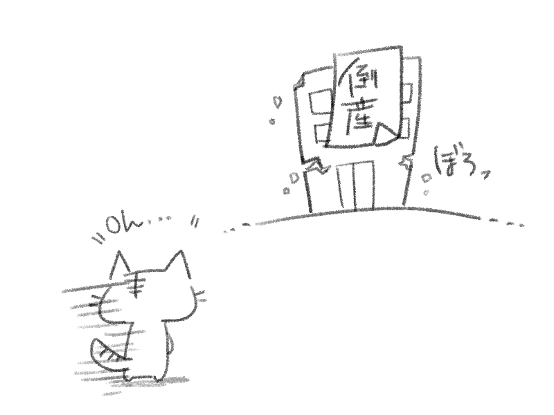
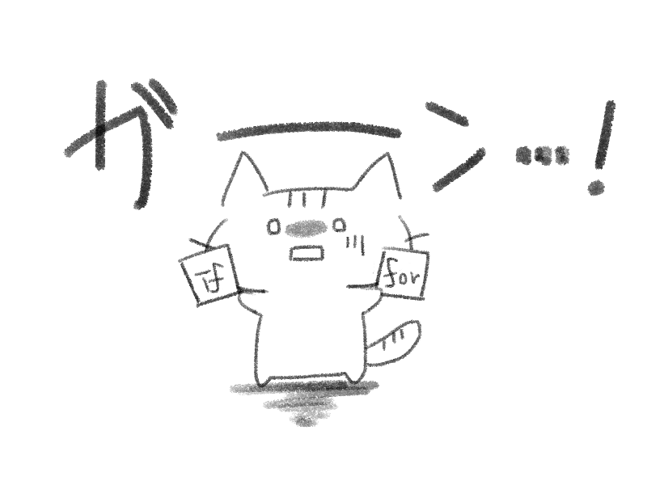
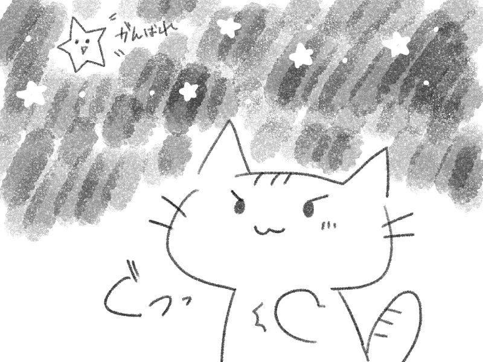

クエスト
クエスト街がイルミネーションで色づき始める11月
朝に飲むオレンジジュースは美味しいけど、日中に飲むとオレンジとかに含まれるソラニンのせいでシミになりやすいんだってな〜。
まあ、オフィスに引きこもってるねこには関係ないか〜。
などど脳内会話を繰り広げながらオフィスのデスクでオレンジジュースを吸い上げるねこの元に、会社リタイア宣言が飛び込んできた

(強制転職イベントだ)
(うーん、次はどうしよう…)
(ていうか…あれ……？？)
(そういえば、ねこって何も作れない？)

そうなのです。
ねこはif文とfor文を書く程度の能力を持つプログラマーもどき。
会社がなくなれば、ねこに残るものは何もない…

こんなんじゃダメだ！！！
ねこも、自分自身で何かを生み出すスキルを身につけたい！
そうだ。Webアプリを作って、この広いネットの世界に羽ばたかせるんだ！
転職？まずはアプリだ！！！(会社都合退職は失業給付金が自己都合退職より早めに受け取れるぞ！)
…こうして、ねこのWebアプリ開発がはじまったのである。